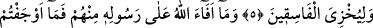
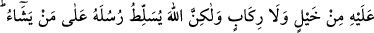
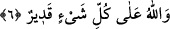

PEYGAMBERİNE VERDİĞİ
GANİMETLER
5. Hurma ağaçlarından, herhangi birini kesmeniz veya olduğu gibi bırakmanız hep
Allah’ın izniyledir ve O’nun yoldan çıkanları rezil etmesi içindir.
6. Allah’ın, onlardan (mallarından) Peygamberine verdiği ganîmetler için siz at
ve deve koşturmuş değilsiniz. Fakat Allah, peygamberlerini dilediği kimselere karşı
üstün kılar. Allah her şeye kadirdir.
“Hurma ağaçlarından, herhangi birini kesmeniz veya olduğu gibi bırakmanız hep
Allah’ın izniyledir.” Âyet-i kerimenin başındaki “Mâ” harfi, “kestiğiniz” anlamındaki
“kata’tüm” fiiliyle mensub olup şart içindir. Hurma anlamındaki “Lîne” kelimesi “el-
levn” kökünden alınmış “hintatün” gibi “fi’letün” ölçüsünde masdardır. Aslı
“livnetün”dür. Vav’dan önceki harf esre bulunduğundan sarfın i’lâl kuralları gereği vav
yâ’ya dönüştürülüp lîne durumu verilmiştir. Tıpkı, Dîme ve Fîme kelimelerinde olduğu
gibi. Çoğulu “elvân” gelir. Hurma çeşitlerinin bütünü demektir. Kelimenin “Lîn”den
alındığı da söylenmiştir. Bu, meyveleri yere yakın ve hurmaları çok güzel, pek değerli
bir hurma ağacının adıdır. Kelimenin bu kökten çoğulu, “elyân”dır.
Râğıb Müfredat’ında şöyle demiştir: Lîn (yumuşaklık), sertlik anlamındaki
huşûnet’in zıddıdır. Bu kelime cisimler gibi maddi varlıklarda kullanılmakta iken sonra
ahlâk ve diğer mânevî varlıkların yerine istiâre olarak kullanılır olmuştur. Örnek olarak,
“Filan kişi yumuşak, falan kişi serttir” denilir. Her iki kelime de duruma ve yerine göre
övme ve yermede kullanılır.
Âyet-i kerimenin: “Hurma ağaçlarından, herhangi birini kesmeniz” ifâdesinden
maksad, yahûdilerin herhangi çeşit hurmalarından kestiğiniz demektir. Lîne çok güzel
hurma ağacıdır. Cem-i kıllet olan hintatün gibi fi’letün ölçüsündedir. Çeşitlerinden
herhangi birine mahsus değildir. Hurmaların en güzelleri olan acve ile berniye çeşidinin
dışında hurma türünün tamamına birden el-Lînetü denir.
“Bıraktığınız” anlamındaki “Teraktümûhâ” kelimesindeki zamir önce geçip şart için
olan “Mâ” harfine râcidir. Müennes (dişil) gelmesi ise “ma” harfinin müennes olan
Lîne (hurma) kelimesiyle açıklanmasındandır. “Allah’ın insanlara açacağı herhangi